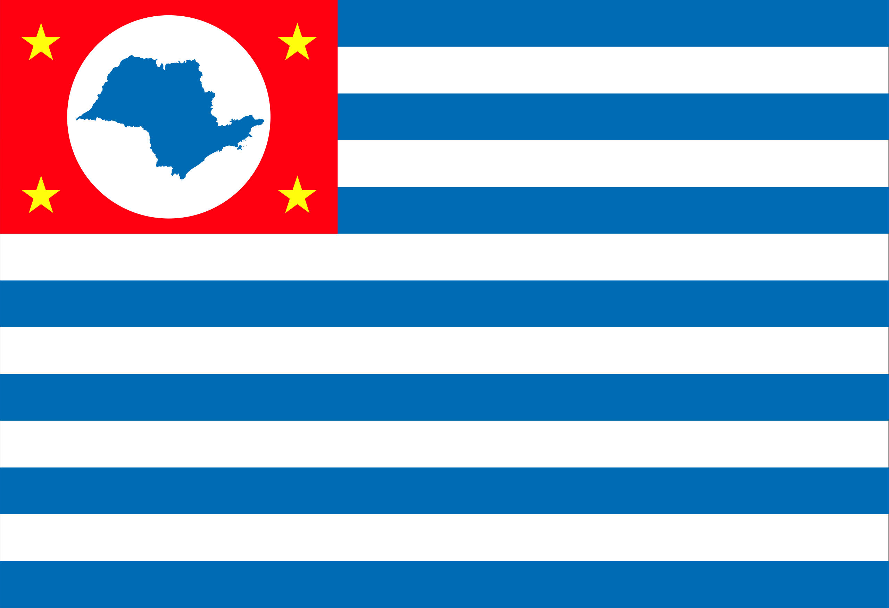

Cruzeiro - Geodex

Município de Cruzeiro
-
Populacão: 82.895 pessoas
-
Área: 305,699km²
-
Fundação: 27 de Dezembro de 1877
-
Distância da Capital: 217km
Cruzeiro, cidade localizada em São Paulo, teve sua história marcada por diferentes fases de crescimento. Fundada no século XIX, inicialmente dedicou-se à atividade agrícola do café, impulsionada pela chegada da Estrada de Ferro Central do Brasil. No entanto, a crise cafeeira na década de 1920 exigiu uma diversificação econômica, levando a cidade a investir em setores como indústria, comércio e serviços. Ao longo do tempo, Cruzeiro se consolidou como um importante centro urbano, preservando sua história e adaptando-se aos desafios do desenvolvimento.